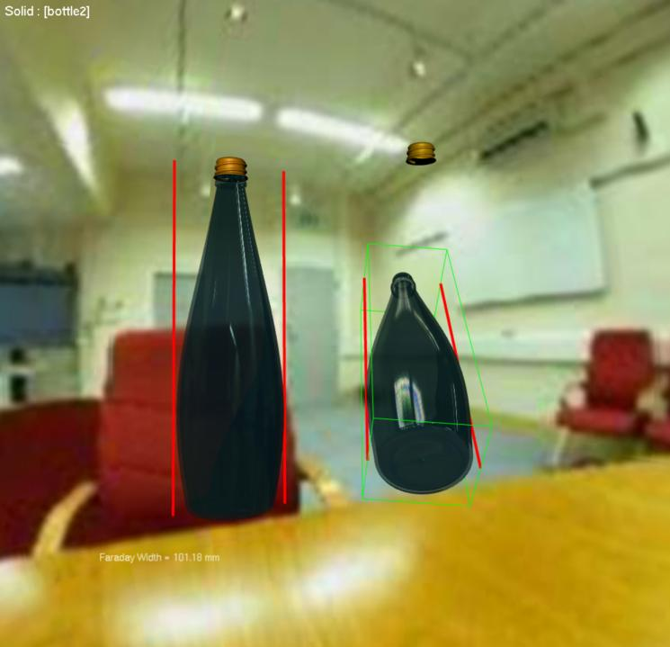
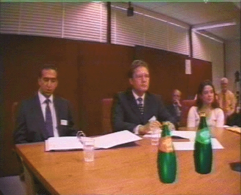
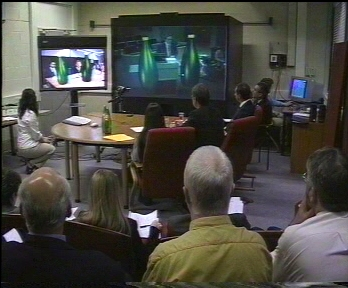

A novel experiment has been conducted at the University of Leeds to investigate whether an augmented collaborative environment could provide a realistic alternative to collocating individuals for ADR negotiations. The individuals that took part in the experiment included an experience mediator and practicing legal representatives. The augmented collaborative environment was based on a video conferencing system that was enhanced to enable virtual artefacts representing items of evidence to be blended directly into the video streams. This experiment sits within the framework of the Court 21 Project, that is seeking to identify how new technology can be used to improve the different aspects of the legal system
  
For more details see:
P. Dew, A. Galata, J. Maxfield and D. Romano, Virtual Artefacts to Support Negotiation within an Augmented Collaborative Environment for Alternate Dispute Resolution, In Proc. 4th International Conference on Collaborative Virtual Environments, 2002 ( .pdf).
The main goal of Court 21 is to pursue research and demonstrate how advances in information technology can best be used to facilitate and potentially improve aspects of the legal system in the UK and worldwide. Court 21 has been created as an enabling body to encourage funding and legal/justice technology projects at Leeds. The programme of work includes the establishment of a working court, demonstrating the use of appropriate information technologies such as video conferencing, electronic document management, advanced computer graphics and computer vision techniques supporting intelligent video conferencing. The project is also seeking to understand the behavioural and architectural issues related to the use of technology in courts and the legal profession.
Court21 is a joint venture between departments of Leeds University, including the Informatics Research Institute, the Courtroom 21 (a joint project of the William and Mary School of Law and the National Center of State Courts , USA) and Leeds based legal company, CourtCom Ltd.
Last update was on May 2001